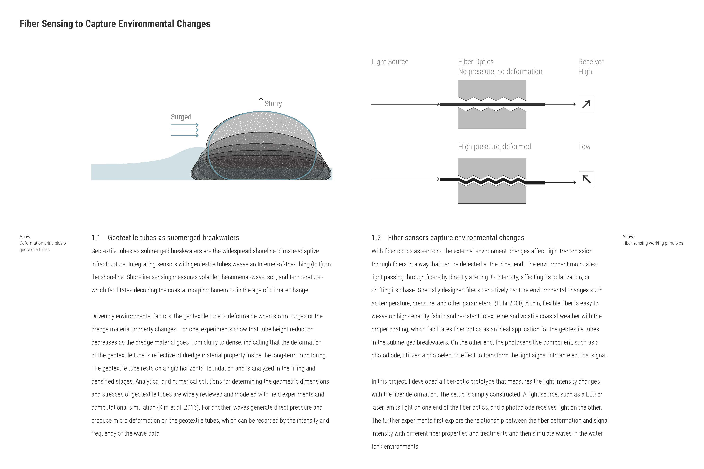
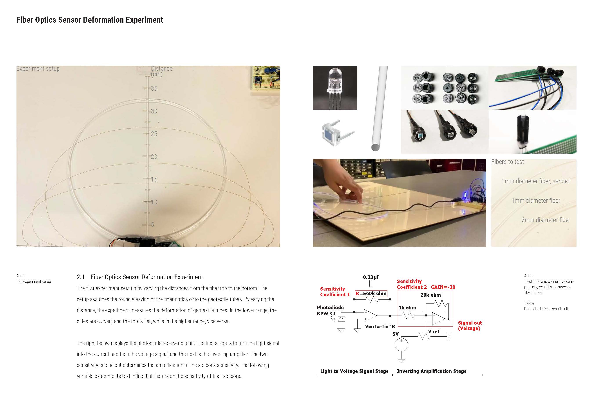
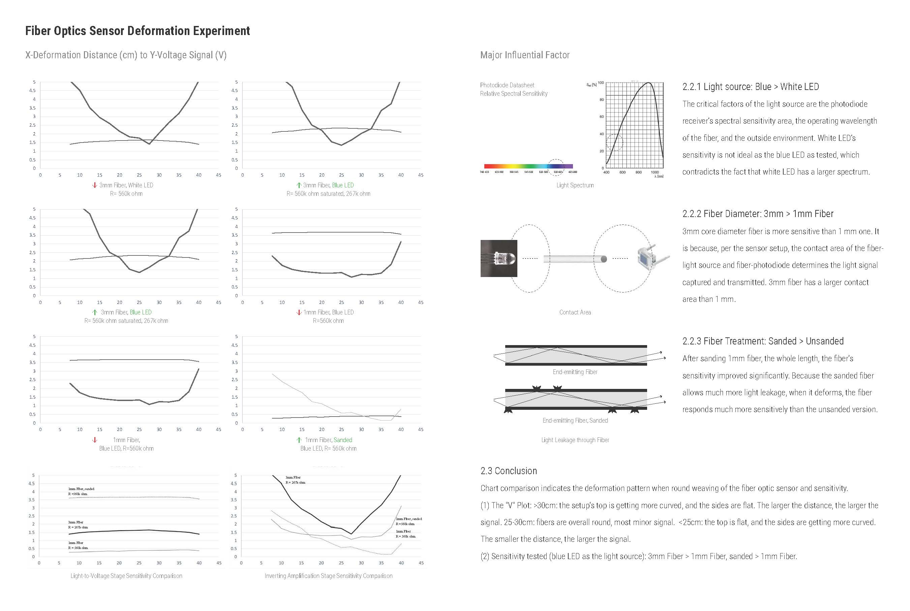
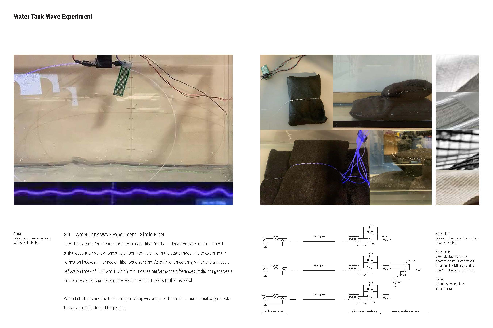
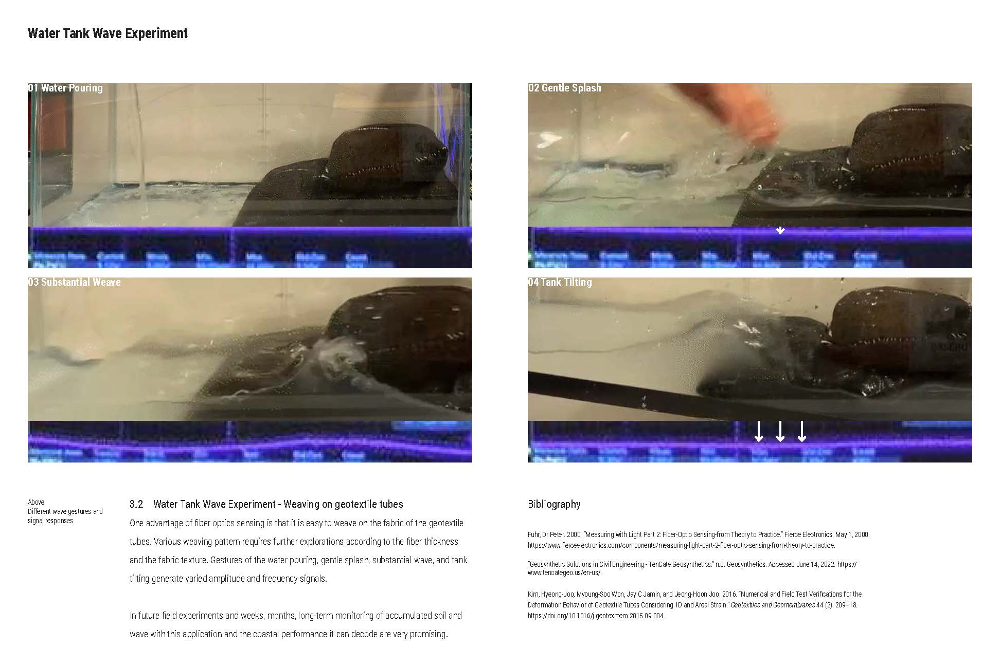

IoT Shoreline: Wave, Weave
Info Indivual Work, 02-05/2022, Academy
Instructor Dr. Joseph A. Paradiso, joep@media.mit.edu
Institution MIT Media Lab, Responsive Environments Group
Honor Featured in "BSLA Landscape Architecture + Climate Action" lightning talk
1st Place in “DLA2022 - Poster
Competition Prize”
Geotextile tubes as submerged breakwaters are the shoreline climate-adaptive infrastructure. The project proposed fiber sensing, a weavable sensor for geotextile tubes, to capture environmental changes, soil, and waves, specifically in this project, enabling an IoT shoreline. The research includes fiber sensor prototype development and two set experiments - deformation experiments on fiber sensors of varying diameters and treatment and water tank waves experiments on breakwater mockups.
Fiber Optics Sensor Deformation Animation





Water Tank Wave Experiment Animation
Geoengineering on the Shoreline